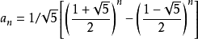
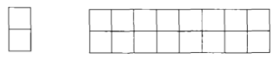

剑指Offer笔记-JS语法 - 1 基础知识
本系列为《剑指Offer》中问题的js版解答。
其他资料：
问题3 二维数组中的查找
问题描述：在二维数组中找到给定数是否存在，二维数组的行和列都是有序增大的。
简单的方法，依次遍历，如下解法是采用数组内置方法：1
2
3
4
5
6
7
8
9function findNative(arr2d, key) {
let found = false;
arr2d.map(function (arr) {
if(arr.includes(key)){
found = true;
}
});
return found;
}
参考方法，每次选取对比的指为当前范围右上角的数，则每次循环将按行或列剔除：1
2
3
4
5
6
7
8
9
10
11
12
13
14
15
16
17
18
19
20
21
22
23
24
25
26
27// arr2d 是一个二维数组，横纵增大，
// rows表示行数，cols表示列数，key表示搜索关键字
// 返回布尔值，查询key是否在arr2d中
function findNum(arr2d, rows, cols, key) {
let found = false;
if(arr2d && rows > 0 && cols > 0){
let row = 0,
col = cols - 1;
while(row < rows && col >= 0){
if(arr2d[row][col] == key){
found = true;
break;
}else if(arr2d[row][col] > key){
col--;
}else{
row++;
}
}
}
return found;
}
let arrQ = [[1,2,8,9],[2,4,9,12],[4,7,10,13],[6,8,11,15]];
console.log(findNum(arrQ, 4, 4, 7));
由于二维数组在内存中实际是连续的空间，所以有可能给出的是一维数组，此时需要计算当前比较数的位置（row * col + col）
本题的考点就是能否找出从某个数组内的数（右上角、左上角、任何角落的位置都可以），从其位置开始分析，找到查找的规律。
问题4 替换空格
问题描述：将字符串'we are happy'替换为we%20are%20happy。
由于js的字符串比较简单，而原书是C++描述的，所以若采用内置的replace函数是非常方便的，而若不用内置的情况下，则O(n)解法思想如下：
相当于一个字符数组，第一遍遍历获取所有空格数量m，然后第二遍从后向前遍历，没遇到空格就将当前向后移动m*3位，遇到空格就替换为%20。
合并两个数组（包括字符串），若从前向后复制需要重复移动数字或字符多次，那么可以考虑从后向前复制，这样能减少移动次数
相关题目：
- 有两个排序的数组A1和A2，内存在A1的末尾有足够的空间容纳A2，请将A2中所有数字插入到A1中并排序。
解法：从后向前对比A1和A2，将较大的数字复制到A1的合适位置上
问题5 从尾到头打印链表
问题描述：输入一个链表的头结点、从尾到头反过来打印出每个节点的指
链表节点定义如下：1
2
3
4function Node(value){
this.value = value;
this.next = null;
}
解法思想：由于链表只能从头到尾遍历，而却需要从尾到头打印，所以可以采用递归的方法，也可以采用辅助栈的方法（其实递归在大多数语言的内部实现就是栈，所以用递归能实现的用栈一定也能实现）。
而关于递归，主要的问题在于，若栈太长，递归调用太深，性能不高。（PS: 与递归相关的一个话题是“尾递归”优化）。
问题6 重建二叉树
问题描述：输入某二叉树的前序遍历和中序遍历结果，重建出该二叉树，假设输入序列不含重复数字
例如：前序[1,2,4,7,3,5,6,8],中序[4,7,2,1,5,3,8,6]
树节点定义如下：1
2
3
4
5function BinaryTreeNode(value){
this.value = value;
this.leftNode = null;
this.rightNode = null;
}
思想：在前序中，第一个数字一定是树根节点，后面依次是连续的左子树的序列和连续的右子树序列；中序遍历中根节点在序列中间，左子树在左边，右子树在右边。
所以从给出的中序中可以得到左右子树的序列。然后对应到前序，分别找到对应的子树，这样就相当于找到了一个节点的位置，同时找到了其左右子树的根节点，如此再对每个子树递归即可找到所有节点的位置。1
2
3
4
5
6
7
8
9
10
11
12
13
14
15
16
17
18
19
20
21
22
23
24
25
26
27
28
29
30
31
32
33
34
35
36
37
38
39
40
41
42// preOrder为前序数组，inOrder为中序数组，返回根节点
function buildBinaryTree(preOrder, inOrder) {
// 对参数进行检查 ...
let startPre = preOrder[0];
let root = new BinaryTreeNode(startPre);
// 若传入的是单个节点
if(preOrder.length == 1 && inOrder.length == 1){
return root;
}
// 在中序中找到根节点
let rootIdxIn = inOrder.indexOf(startPre),
newInOrderLeft = inOrder.slice(0, rootIdxIn),
newInOrderRight = inOrder.slice(rootIdxIn+1),
newPreOrderLeft = preOrder.slice(1, rootIdxIn+1), // 此处传入rootIdxIn的索引其实就是左子树的节点个数
newPreOrderRight = preOrder.slice(rootIdxIn+1);
// 利用递归构造当前root的左右子树
if(newPreOrderLeft.length > 0){
root.leftNode = buildBinaryTree(newPreOrderLeft, newInOrderLeft);
}
if(newPreOrderRight.length > 0){
root.rightNode = buildBinaryTree(newPreOrderRight, newInOrderRight);
}
return root;
}
let root = buildBinaryTree([1,2,4,7,3,5,6,8], [4,7,2,1,5,3,8,6]);
// 前序遍历测试：
function preOrder(root) {
console.log(root.value);
if(root.leftNode){
preOrder(root.leftNode)
}
if(root.rightNode){
preOrder(root.rightNode)
}
}
preOrder(root);
需要有对二叉树不同遍历算法基本的理解，以及如何在遍历中划分去左右子树，发现问题的本质：子树也是一颗二叉树，因此可采用递归方式。
问题7 用两个栈实现队列
问题描述：用两个栈实现一个队列，队列的声明如下，请实现它的两个函数 appendTail 和 deleteHead，分别完成在队列尾部插入和队列头部删除1
2
3
4
5
6
7
8
9
10
11
12
13
14
15
16
17// 以数组模拟栈，仅对栈使用push和pop方法和length属性
let stack1 = [],
stack2 = [];
function push(node)
{
stack1.push(node);
}
function pop()
{
if(stack2.length == 0){
while(stack1.length > 0){
stack2.push(stack1.pop());
}
}
return stack2.pop();
}
关键是弄明白3种情况：
- 忘空队列里添加、删除元素
- 忘非空队列里添加、删除元素
- 连续删除元素直至队列为空
思路：插入元素是仅插入到stack1中，每次需要删除队头元素时检查stack2，若stack2非空则直接弹出stack2中栈顶元素，否则先将stack1中全部元素弹出到stack2中，然后再弹出stack2栈顶元素。
相关题目：
- 用两个队列实现一个栈
解法：插入时始终只在一个队列queue1操作，另一个队列queue2为空，弹出时将当前queue1内除最后一个元素外的其他元素依次弹入queue2，然后弹出最后一个元素即可，完成一次弹出操作后，queue1和queue2的角色互换即可复原原来的操作顺序了。
问题8 旋转数组最小值
问题描述：把一个数组最开始的若干个元素搬到数组的末尾，我们称之为数组的旋转。 输入一个非递减排序的数组的一个旋转，输出旋转数组的最小元素。 例如数组{3,4,5,1,2}为{1,2,3,4,5}的一个旋转，该数组的最小值为1。 NOTE：给出的所有元素都大于0，若数组大小为0，请返回0。
若套用js数组原生的Math.min则非常简单1
2
3
4
5
6
7
8function minNumberInRotateArray(rotateArray)
{
if(rotateArray.length == 0){
return 0
}else{
return Math.min.apply(null,rotateArray)
}
}
但若不使用原生提供的函数，则可以通过顺序遍历或二分法找到这个最小值。
使用二分法的时候需要注意，数组不是完全有序的，而是一个类似凹形，所以最小值一定在中间（只要检查一下数组头和数组尾的大小即可），需要注意的是“非递减”的意思是有可能会有相等的元素。同时需要注意数组可能本身就是有序的（即数组头小于数组尾）。
对普通情况，找到中间值，无论是任何的情况，中间值大于数组头，说明最小值在右边，中间值小于数组尾，说明最小值在左边，一定可以将数组化为一个只有一半规模的数组，此时重复查找即可。当前后两个指针相遇时说明找到了最小值。
问题9 斐波那契数列
问题描述：大家都知道斐波那契数列，现在要求输入一个整数n，请你输出斐波那契数列的第n项。n<=39
没啥说的，经典问题，当n>1时，f(n) = f(n-1) + f(n-2),其中 f(0) = 0, f(1) = 1。
利用缓存，将已经求过的数存下来，而不是用递归,但其实时间复杂度还是O(n),1
2
3
4
5
6
7
8
9
10
11
12function Fibonacci(n)
{
let total = [0,1];
let tar = 2;
while(tar <= n){
total[tar] = total[tar-1] + total[tar-2];
tar++;
}
return total[n];
}
然后还有一个尾递归的方式：1
2
3
4
5
6
7
8
9
10
11
12function Fibonacci(n)
{
// 尾递归, 参考：https://blog.csdn.net/mr_listening/article/details/51106535
function tail(n, ret1, ret2){
if(n == 0){
return ret1;
}
return tail(n-1, ret2, ret1 + ret2);
}
return tail(n, 0, 1);
}
然后，还有一个比较牛逼的，直接用公式：比内公式, 具体参考斐波那契数列

其实斐波那契数列也是其他类似问题的解答，
相关题目：
- 用2x1的小矩形去覆盖2x8的大矩形，问有多少种方法？需要注意初始条件，以及n为0时的特殊性
 - 青蛙跳台阶问题，一次可以跳一阶或两阶，问n阶台阶有多少种跳法。解法就是斐波那契数列，但需要注意f(0)的初始条件为1。
- 青蛙跳台阶问题扩展版：若它还是一次跳任意阶（1~n）呢？问有多少种方法，答案为
$$f(n) = 2^{(n-1)}$$
问题10 二进制中1的个数
问题描述：输入一个整数，输出该数二进制表示中1的个数。其中负数用补码表示。
利用n-1之后的二进制数与n后能消除n二进制中最右边的1的特性，每次消除一个1，直到n为0。
比如24的二进制为1100，则23的二进制为1011, 而23&24的结果为1000,即将1100最右边的1消掉了。
1 | function NumberOf1(n) |
将一个整数减去1后再与原来的整数做位与运算，得到的结果相当于把该整数的二进制表示中的最右边的一个1变为0。
相关题目:
- 判断一个数是否时2的整数方次幂，此时直接判断其二进制中是否仅有一个1即可
- 输入两个整数m和n，计算需要改变m的二进制多少位才能得到n，如10与13的二进制分别为
1010与1101，则需要改变3位可将两数互换。解法思想即要获取两个二进制中位不同的数量，即m^n(m与n异或)的结果。